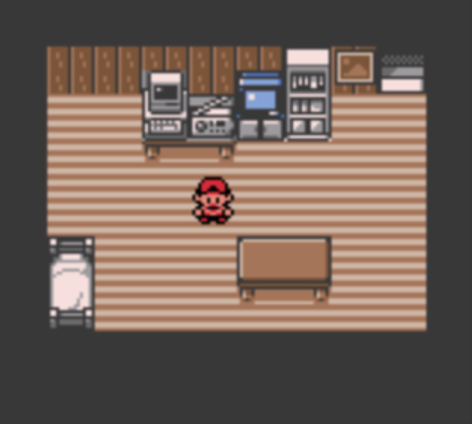
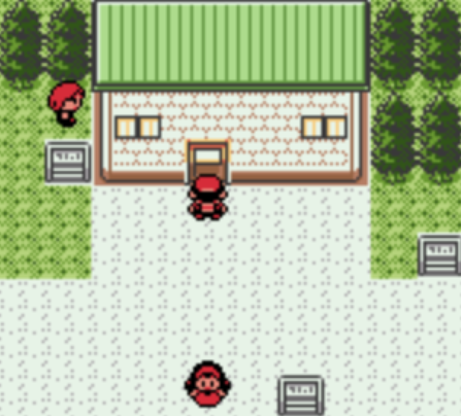
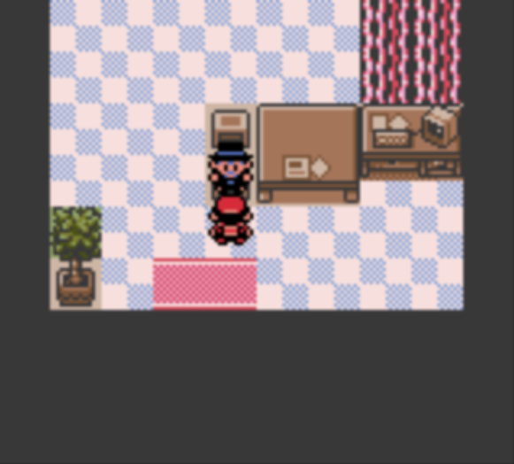
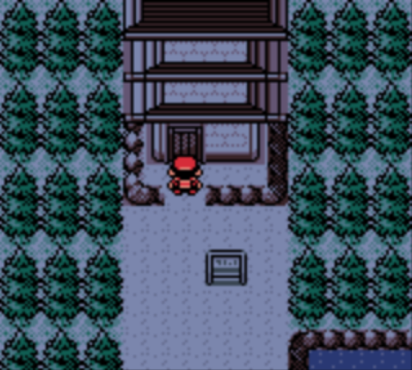
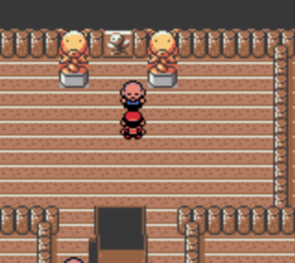
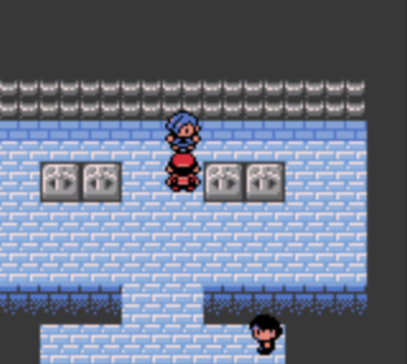

Route To Violet City

Player's Home
-
After you start your game, you will meet Professor Oak, who will ask you what time it is. This will
set your in-game clock and will change the encounters on Routes depending on what time it is. He
will then ask you for your name, and then you will wake up in your house
-
Go downstairs and talk to your mother. She tells you that Professor Elm, whose lab is beside your house,
is looking for you, and she also gives you your Pokegear, a device that is essential for a Pokemon trainer
(allows you to call, use maps, find items, etc).

Professor Elm's Lab
-
Go to the right and enter Professor Elm’s lab, ignoring the red-haired kid that will push if you try to talk to him.
Once you’ve entered inside, go talk to Professor Elm. He will request that you go to visit his acquaintance.
Mr. Pokemon lives north of Cherrygrove, and due to the distance, Professor Elm allows you to pick one of
the three starters.
-
Note: The best starter to choose for this region is Cyndaquil because its type of matchup with the gym leaders of the
region is exceptional. Totodile is also a solid option, but if you want a challenge, choose Chikorita, because the type
matchups will be much more challenging.

Mr. Pokemon's House
-
Head towards Route 29, which connects New Bark Town and Cherrygrove. When you arrive, an old man will take you around
the city if you talk to him. After that, head north towards Mr. Pokemon's house. There, you will meet Professor Oak,
who will give a Pokedex, and Mr. Pokemon will give you an egg. After that, you will be called to return to the lab.
-
When returning to Cherrygrove, you will encounter your rival, who will have the starter that has a type advantage over yours.
He will have a level 5, and you can still win quite easily even with the type disadvantage.
-
After beating your rival, return to New Bark Town, where you will find out that your rival has robbed Professor Elm of one
of his starters. After giving the egg to Professor Elm, you will then travel towards Violet City, for your first gym battle.


Bellsprout Tower
-
Travel back to Cherrygrove, and go up north, but then go towards Route 30. On Route 30, there are multiple trainer battles. After
that, head left toward Route 31. You could also go to Dark Cave, but as the name suggests, it is very dark and you won't be able
to see anything. After that, you will arrive in Violet City.
-
Once you arrive in Violet City, you'll want to level up, and a good place to go is Bellsprout Tower. There are many sages that
you can fight in Bellsprout Tower, which will well prepare you for the fight against the gym leader. At the top of the tower,
you will fight the Elder, and afterwards, you will get HM05 (Flash), which is not mandatory but will help you navigate dark places
like Dark Cave.

Violet City Gym
The gym leader of Violet City is Falkner, who specializes in flying-type Pokemon. If you picked Chikorita, you may struggle, but
Cyndaquil or Totodile will do just fine. But to help you out, you may want to catch a rock type, as they are very good against
the flying type Pokemon that Falkner has. You can find Geodude in Dark Cave, or you can trade a Bellsprout (found on Route 31)
for an Onix with the trainer that lives in the southmost house of Violet City.
| Pokemon |
Type |
Level |
| Pidgey |
Normal/Flying |
Level 7 |
| Pidgeotto |
Normal/Flying |
Level 9 |